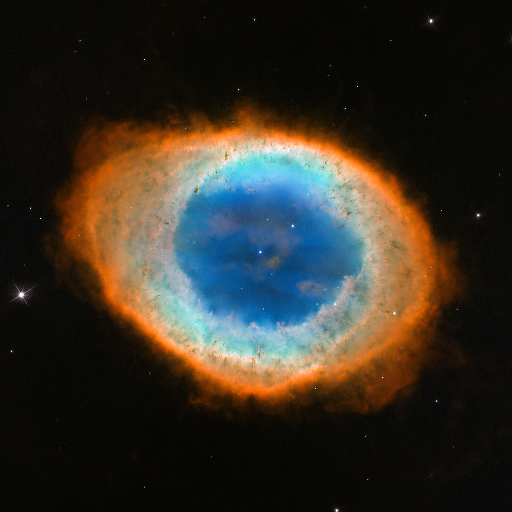
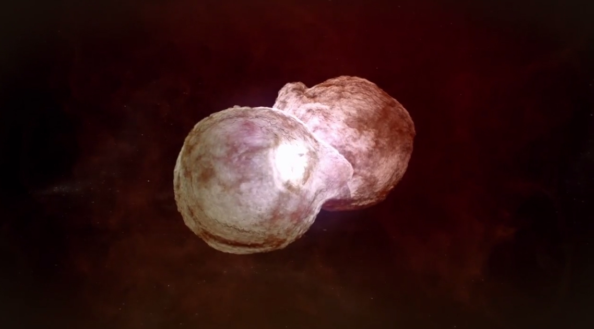

Știm cu toții că Universul este într-o expansiune și într-o schimbare continuă. Din acesta fac parte și stelele, corpuri cerești fascinante. Atât oamenii, cât și cercetătorii continuă să caute și să afle cât mai multe informații despre acestea.
- Stelele trec prin mai multe etape de viață, la fel ca orice altă ființă organică. Atunci când o stea moare, ea se transformă într-un „pitic alb”, se stinge treptat emanând lumină albă până când se stinge pentru totdeauna. 
- Unele tipuri de stele sunt de 100 de ori mai mari decât Soarele. Mai mult, aceste stele pot să emane de peste 1 milion de ori mai multă energie decât Soarele.
- Eta Carinae este una dintre cele mai mari stele din galaxie. 
- Unitățile de măsură utilizate pentru măsurarea distanței dintre stele și Pământ au valori imense. Cea mai apropiată stea de Pământ este situată la aproximativ 4,2 ani-lumină depărtare. Ar fi nevoie de aproximativ 70 000 de ani pentru a ajunge în spațiu la acea stea.